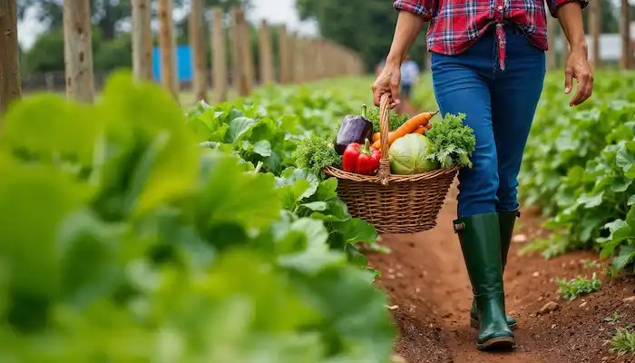

🗺 Country Overview
📊 Crop Price Indicators
Live referenceⓘ Prices are reference values converted from USD via Open Exchange Rates. Source: USDA FoodData Central. Not a live market price feed.

ⓘ Prices are reference values converted from USD via Open Exchange Rates. Source: USDA FoodData Central. Not a live market price feed.